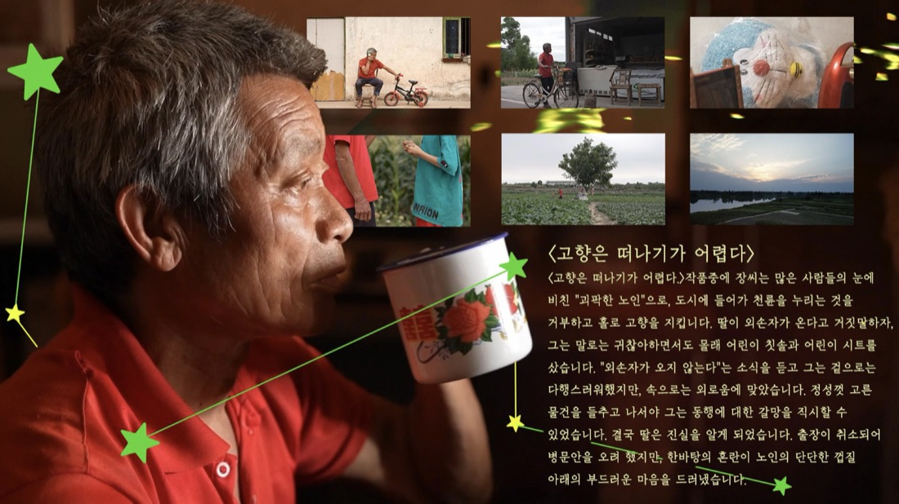
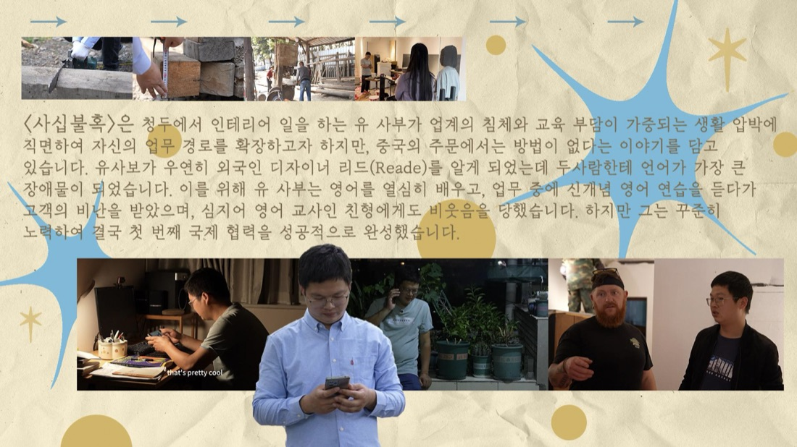
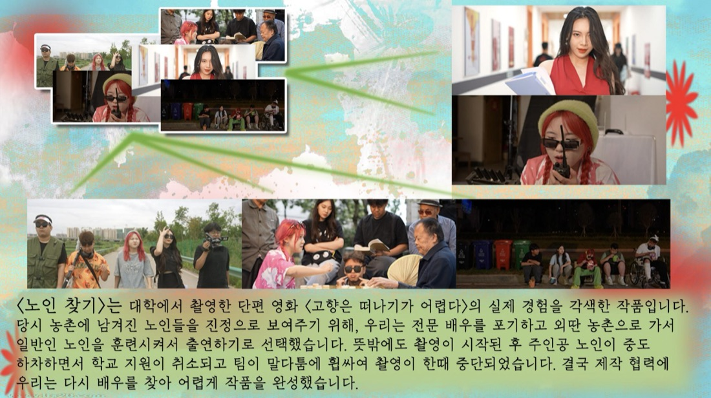
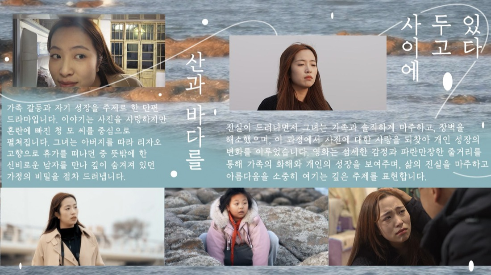
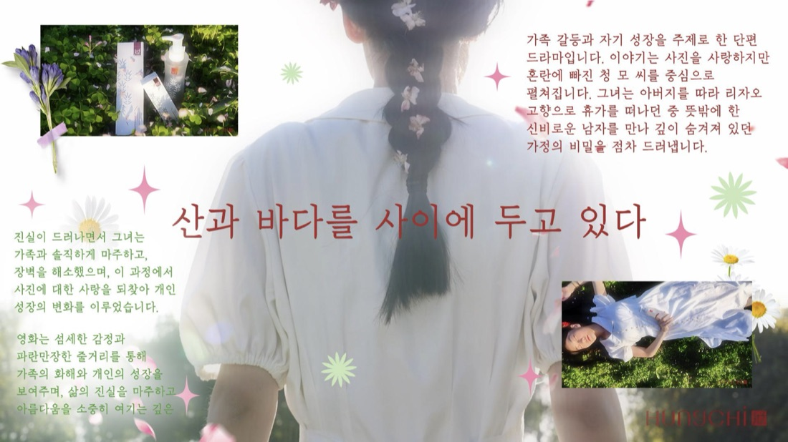
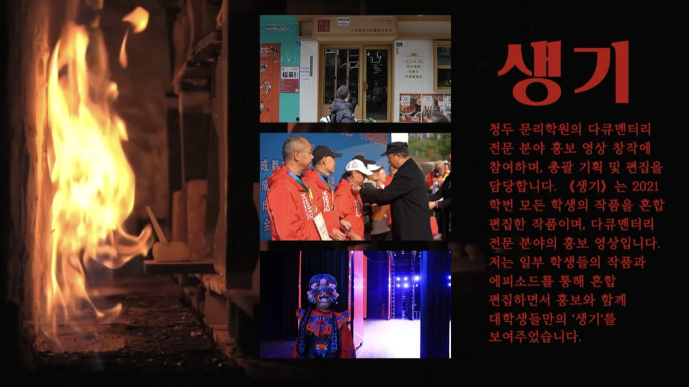
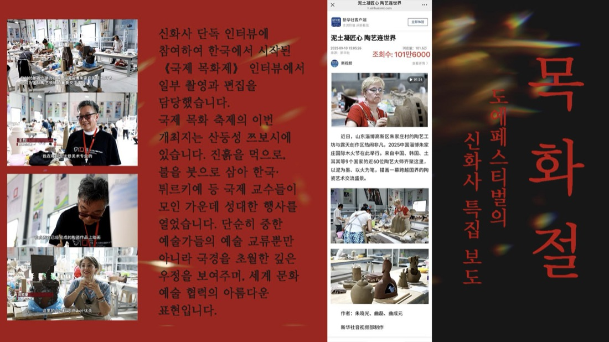
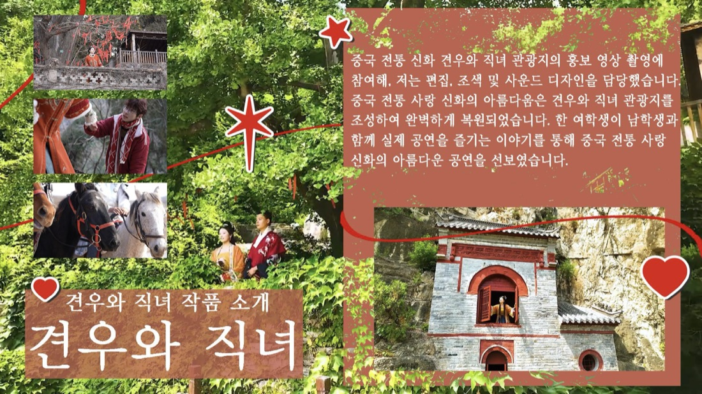

2021 - 2025
청두문리학원
방송영상연출을 전공하며 영상 스토리텔링, 제작 기획, 촬영, 편집, 미디어 커뮤니케이션을 중심으로 학습했습니다.
학력
2021 - 2025
방송영상연출을 전공하며 영상 스토리텔링, 제작 기획, 촬영, 편집, 미디어 커뮤니케이션을 중심으로 학습했습니다.
수상
장학금, 공모전, 자격증, 교내외 수상 경력을 이곳에 정리할 수 있습니다.
영화, 연출, 편집, 사진, 미디어 관련 프로젝트와 수상 내용을 추가할 수 있습니다.
경험
프로젝트 / 인턴십
단편 영화, 다큐멘터리, 홍보 영상, 행사 촬영 등 다양한 영상 제작 과정에 참여했습니다.
캠퍼스 / 스튜디오
기획안 작성, 촬영 일정 관리, 현장 조율, 후반 편집, 결과물 배포까지 제작 전반의 흐름을 경험했습니다.
작품

드라마 영화작품 01

다큐멘터리작품 02

드라마 영화작품 03

드라마 영화작품 04

광고작품 05

홍보 영상작품 06

특집 보도작품 07

관광 홍보작품 08
역량
연락처